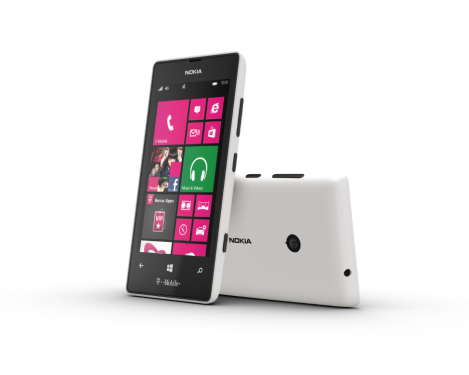

Specifications of Nokia Galaxy J7 (Gold, 16 GB)
Technical Details
Brand Blu
Model X130E Grey
Model Name Win Jr LTE
Model Year 2015
Item Weight 136 g
Product Dimensions 5.2 x 5.7 x 0.4 cm
Batteries: 1 Lithium ion batteries required. (included)
Item model number X130E Grey
RAM Size 512 MB
Memory Storage Capacity 8
Flash Memory Installed Size 4
Digital Storage Capacity 8 GB
Operating System Windows
Processor Speed 1.2 GHz
Processor Count 4
Additional Features Video Calls, Dual SIM, GPS, Music Player, Video Player, FM Radio, Accelerometer, Gyro sensor, Proximity sensor, E-mail, Expandable Memory: 64GB
Included Components Headphone, USB cable, quick guide with attention card, sar booklet, stereo headset, screen protector film, silicone case.
Screen Size 4.5 Inches
Colour Screen Yes
Max Resolution 5 Megapixels
Horizontal Resolution 480 Pixels
Max Vertical Resolution 854 Pixels
Batteries Included Yes
Batteries Required Yes
Battery Cell Composition Lithium Polymer
Battery Power 2000
Connector Type GSM, 3G, 4G LTE, WiFi
Form Factor Touchscreen Phone
Supports Bluetooth Technology Yes
Price: Rs. 12,590.00